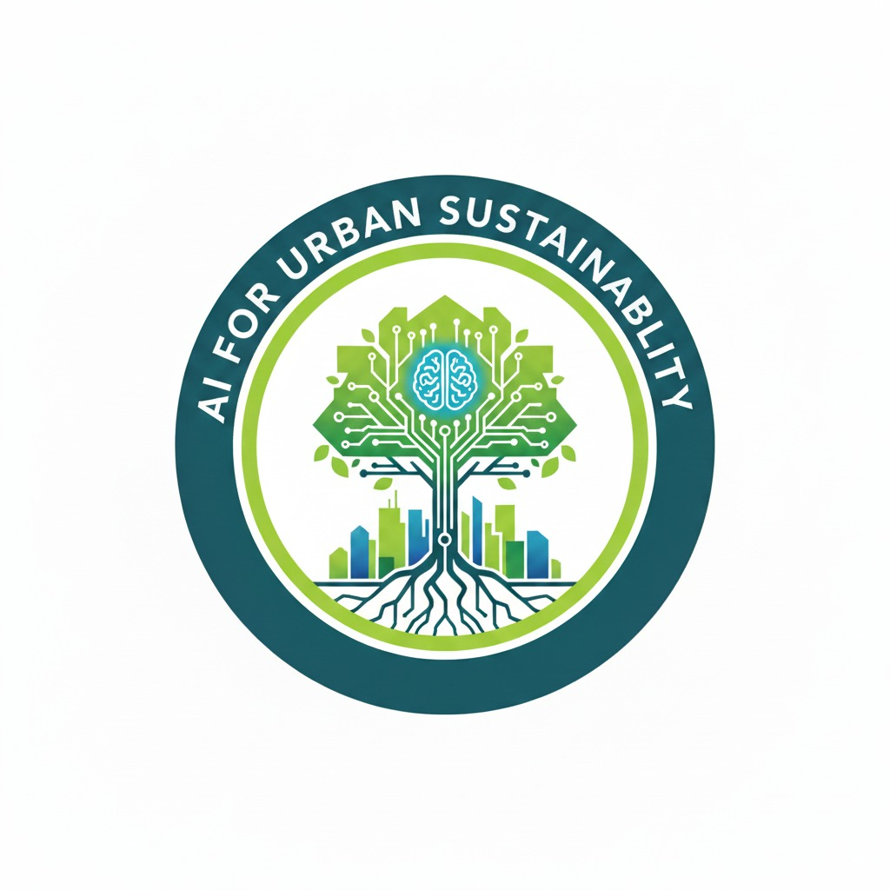

AI for Urban Sustainability
Spatial data science, machine learning, and deep learning for more resilient cities
About the course
Cities face growing environmental, social, and economic pressures—from climate change and rapid urbanization to mobility, infrastructure, and equity challenges. AI for Urban Sustainability explores how artificial intelligence and spatial data science can help us understand these complex systems and design more sustainable, resilient, and livable cities.
Through hands-on notebooks and applied case studies, students work with geospatial data, remote sensing imagery, street-level images, and urban datasets. The course progresses from Python and spatial analysis fundamentals to GPU computing, machine learning, computer vision, and large language models.
What you will learn
- Analyze urban systems using vector, raster, and remote-sensing data
- Build reproducible spatial workflows with Python and Jupyter
- Apply machine-learning methods to land-use and land-cover mapping
- Develop deep-learning models for object detection and image segmentation
- Use GPU computing for high-performance urban analysis
- Explore practical applications of large language models in urban research
Technology stack
Python · GeoPandas · Fiona ·
Shapely · Rasterio · GDAL ·
scikit-learn · PyCUDA ·
Jupyter
Getting started
Clone this repository:
git clone https://github.com/xiaojianggis/ai-urban-sustainability.git cd ai-urban-sustainabilityCreate and activate the course environment:
conda env create -f env.yml conda activate geospatialStart JupyterLab:
jupyter lab
New to the setup process? See the guides for installing Anaconda and configuring Jupyter Notebook.
Course materials
| Lab | Theme | Core concepts |
|---|---|---|
| 01 | Python programming | Data structures, loops, and file I/O |
| 02 | Vector data | GeoPandas, Fiona, Shapely, and spatial relationships |
| 03 | Raster data | NAIP imagery, clipping, mosaicking, and zonal analysis |
| 04 | Urban flood mapping | Digital elevation models and HAND |
| 05 | GPU programming | PyCUDA and urban shade modeling |
| 06 | Machine learning | scikit-learn and land-cover classification |
| 07 | Deep neural networks | Regression and convolutional neural networks |
| 08 | Object detection | Mask R-CNN, LabelMe, and fine-tuning |
| 09 | Image segmentation | U-Net building extraction and street-level semantic segmentation |
| 10 | Large language models | Text and image analysis with the OpenAI API |
Lab 01 · Python programming fundamentals
Lab 02 · Vector data operations
Use GeoPandas, Fiona, and Shapely to conduct spatial analysis with shapefiles. Download the complete lab dataset, then extract it into your Lab 02 working directory.
- Read, write, and analyze shapefiles with GeoPandas
- Work with shapefiles using Fiona and Shapely
- Perform advanced feature, intersection, and spatial-index analysis
Lab 03 · Raster data operations
- Download nationally available aerial imagery
- Read, write, display, and manipulate raster data
- Run clipping, mosaicking, and zonal analysis workflows
Lab 04 · Urban flood mapping with DEMs
Lab 05 · GPU programming for shade mapping
Lab 06 · Machine learning fundamentals
Lab 07 · Deep neural networks
These exercises run in Google Colab.
- Build a deep neural network for regression
- Build a convolutional neural network for image classification
Lab 08 · Mask R-CNN for object detection
- Become familiar with the Mask R-CNN object-detection architecture
- Create custom labeled data with LabelMe
- Explore YOLO object detection
Lab 09 · Image segmentation
Use U-Net for building extraction, then explore semantic segmentation of street-level imagery.
- Prepare training datasets for the convolutional neural network — Open in Colab
- Train the model and generate building predictions — Open in Colab
- Pretrained model for street-level image segmentation
Lab 10 · Large language models
- Explore large language models and their urban applications
- Use the OpenAI API for text and image analysis
Repository structure
ai-urban-sustainability/
├── lab1-basics-python-spatial-programing/
├── lab2-vector-data-manipulation/
├── lab3-raster-data-manipulation/
├── lab4-urban-flood-mapping/
├── lab6-machine-learning/
├── lab9-image-segmentation/
├── lab10-llms/
├── env.yml
└── README.mdLabs 05, 07, and 08 use externally hosted notebooks linked above. Lab 09 combines building extraction and street-level image segmentation; the large-language-model material is now Lab 10.
Using these materials
Each lab is designed as a practical, notebook-based exercise. Open the linked notebook, read the setup notes, and keep its supporting data in the same lab directory unless the instructions specify otherwise. Google Colab links are provided for exercises that benefit from hosted GPU resources.